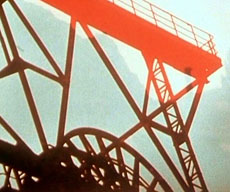

|
STUDIEN ZUM UNTERGANG DES ABENDLANDS (Studies for the Decay of the West)
Klaus Wyborny | GER 2010 | 80 min.
Material: Super-8
Format: DigiBeta
Original language: German
Script: Klaus Wyborny
Camera:Klaus Wyborny
Editing: Klaus Wyborny
Music: Klaus Wyborny
Production: Typee
Print/Sales: Typee
www.typee.de
This experimental music film refers to Oswald Spengler's world-famous philosophical work "Der Untergang des Abendslandes" ("The Decay of the West, 1918"). Culture pessimist Spengler argues that progress is an illusion and that the modern era brings little good. People are no longer able to understand the rationality of the world. Wyborny did not set out to make a film version of Spengler's theories, but rather a visual reflection on the modern age; a stroboscopic journey in five parts to industrial, natural and urban landscapes. He uses 6,299 shots, edited directly in a Super8 camera. Each piano note and violin vibrato evokes a new image: demolished buildings, rubble, destruction and nature, all shot between 1979 and 2010 in locations such as New York, the Ruhr, Hamburg, East Africa and Rimini. – International Film Festival Rotterdam 2011
Klaus Wyborny was born in 1945 in Magdeburg, Germany. He studied theoretical physics in Hamburg and New York. In 1968 he was co-founder of the Filmemacher Cooperative Hamburg and of the literary journals "Bona Vista" and "Henry". He is a teacher as well as a filmmaker.
Films (selection): Dämonische Leinwand 1969 | Die Geburt der Nation 1973 | Das szenische Opfer 1980 | Sulla 2002 | Hommage an Ludwig van Beethoven 1977–2006
back
|